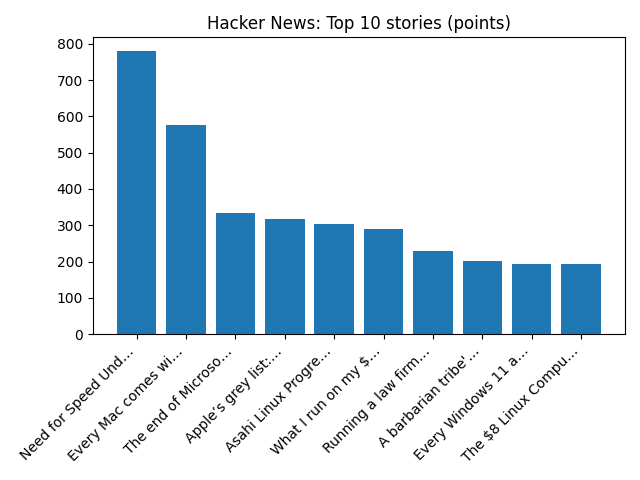

YOUR DAILY INTELLIGENCE BRIEF · 2026-11-08
The world, in focus.
No recent news coverage available.
🌍 Global coverage
🌌 Beyond Earth

Major Fireball Meteor
📜 On this day
- 2020 Myanmar holds the 2020 general election, re-electing a government led by the National League for Democracy, which is deposed by the Burmese military the following February during the 2021 Myanmar coup d'état.
- 2017 The Louvre Abu Dhabi was inaugurated by the French president Emmanuel Macron and then-crown prince of Abu Dhabi Mohamed bin Zayed Al Nahyan.
- 2016 Indian Prime Minister Narendra Modi publicly announces the withdrawal of ₹500 and ₹1000 denomination banknotes.
- 2016 Donald Trump is elected the 45th President of the United States, defeating Hillary Clinton, the first woman ever to receive a major party's nomination.
📈 Topic activity
Source health: 24/24 healthy
View original detailed report
Daily Knowledge Garden — 2026-11-08
🧭 Daily Summary
Global coverage includes Government 'looking seriously' at banning under-16s from Vinted and eBay; Russell Brand to learn sentence after being found guilty of rape and sexual assault; Pope Leo heads to Milei's Argentina as tensions loom over austerity, Iran - Reuters. Local coverage includes Northern Virginia Christmas Market canceled days before opening - WJLA; DMV weekend weather: Frost advisory issued across Northern Virginia ahead of sunny 60s - FOX 5 DC.
🌍 Global News (cross-source)
- Government 'looking seriously' at banning under-16s from Vinted and eBay — BBC — Tech
- Russell Brand to learn sentence after being found guilty of rape and sexual assault — NPR — Top Stories
- Pope Leo heads to Milei's Argentina as tensions loom over austerity, Iran - Reuters — Reuters — Headlines (Google News)
- At least 21 dead after migrant boat sinks off Senegal coast, government says - Reuters — Reuters — Headlines (Google News)
- No. 4 Notre Dame takes big lead, then holds off No. 1 Miami 31-24 in a classic - AP News — AP — Headlines (Google News)
🏙️ Local News
- Northern Virginia Christmas Market canceled days before opening - WJLA — Google News — Northern Virginia
- DMV weekend weather: Frost advisory issued across Northern Virginia ahead of sunny 60s - FOX 5 DC — Google News — Northern Virginia
- Maryland and Northern Virginia Meteorologists Tease Potential Snowstorm November 13-16 - The MoCo Show - — Google News — Northern Virginia
- 20-35 Inches of Snow For D.C., Maryland, and Northern Virginia in WUSA9’s Winter Outlook - The MoCo Show - — Google News — Northern Virginia
- Northern Virginia high school football scores for Nov. 6 - InsideNoVa — Google News — Northern Virginia
🚀 Hacker News (Top 5)
- Need for Speed Underground 2 online in the browser — 779 points, 222 comments
- Every Mac comes with an (undocumented) family member classifier — 577 points, 330 comments
- The end of Microsoft Research's AI Frontiers group — 335 points, 194 comments
- Apple’s grey list: Words and phrases your iPhone won’t help you spell — 318 points, 220 comments
- Asahi Linux Progress Linux 7.3 — 304 points, 252 comments

🌍 Wikipedia — On This Day (selected)
- 2020 — Myanmar holds the 2020 general election, re-electing a government led by the National League for Democracy, which is deposed by the Burmese military the following February during the 2021 Myanmar coup d'état.
- 2017 — The Louvre Abu Dhabi was inaugurated by the French president Emmanuel Macron and then-crown prince of Abu Dhabi Mohamed bin Zayed Al Nahyan.
- 2016 — Indian Prime Minister Narendra Modi publicly announces the withdrawal of ₹500 and ₹1000 denomination banknotes.
- 2016 — Donald Trump is elected the 45th President of the United States, defeating Hillary Clinton, the first woman ever to receive a major party's nomination.
- 2013 — Typhoon Haiyan, one of the strongest tropical cyclones ever recorded, strikes the Visayas region of the Philippines; the storm left at least 6,340 people dead with over 1,000 still missing, and caused $2.86 billion (2013 USD; equivalent to $3.95 billion in 2025) in damage.
🎲 Wikipedia — Random Article
Vampire Night
Vampire Night (ヴァンパイアナイト, Vanpaia Naito) is a 2000 light-gun shooter video game developed by Wow Entertainment and published by Namco for arcades. It is a collaboration between Sega and Namco.
https://en.wikipedia.org/wiki/Vampire_Night
🌌 NASA APOD
Feed Health
- Reuters — Headlines (Google News): ok (15 articles)
- Reuters — World (Google News): ok (15 articles)
- Reuters — Business (Google News): ok (15 articles)
- BBC — World: ok (15 articles)
- BBC — Tech: ok (15 articles)
- BBC — Business: ok (15 articles)
- BBC — Science: ok (15 articles)
- AP — Headlines (Google News): ok (15 articles)
- AP — Politics (Google News): ok (15 articles)
- AP — Business (Google News): ok (15 articles)
- NPR — Top Stories: ok (10 articles)
- NPR — Politics: ok (10 articles)
- NPR — Business: ok (10 articles)
- NPR — Science: ok (10 articles)
- NPR — Technology: ok (10 articles)
- ScienceNews: ok (15 articles)
- ScienceDaily — Top: ok (15 articles)
- Nature — Technology: ok (15 articles)
- Google News — Northern Virginia: ok (15 articles)
- Google News — Northern Virginia traffic: ok (15 articles)
- Google News — Northern Virginia weather: ok (15 articles)
- Wikipedia — On This Day: ok (10 articles)
- Wikipedia — Random: ok (1 articles)
- NASA — APOD: ok (1 articles)
Runs so far today: 2